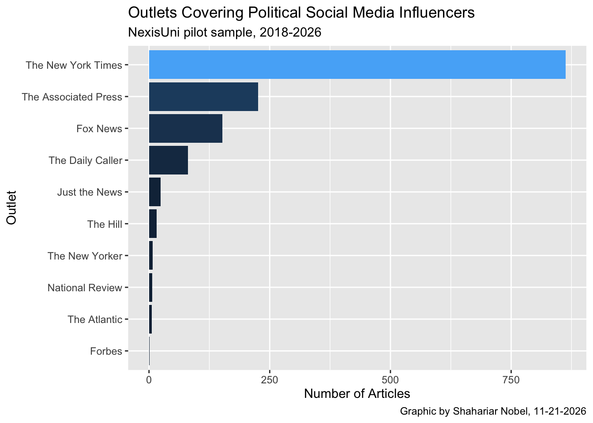
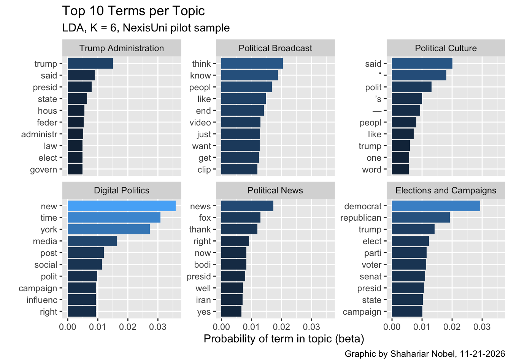

Representation of Political Influencers in U.S. Newspapers
Author
Shahariar Nobel
Published
November 21, 2026
This page is a visual summary of a topic modeling (LDA) analysis identifying the main themes in U.S. news coverage of political social media influencers. The analysis is based on a pilot subset of a larger 3,108-article corpus of 1,384 English-language articles from 10 U.S. outlets classified as left-, center-, or right-leaning by AllSides. The articles were retrieved from NexisUni using searches combining influencer-related and political terms.
Steps completed for the topic modeling
Imported the NexisUni articles and removed duplicate or unmatched records. Split the articles into text segments and created a corpus object. Cleaned the text: lowercasing, removing stopwords and punctuation, and stemming. Built a document-term matrix, keeping terms that appear at least 5 times. Fit an LDA model with 6 topics (Gibbs sampling, seed = 9161, 500 iterations, alpha = 0.2). Examined the top terms for each topic and assigned provisional labels. Calculated topic proportions by year. Validated the labels by reading the source articles most associated with each topic.
AI Disclosure
I used Claude Code (Anthropic) to help me import my large dataset and publish this project on GitHub. With Claude’s help, I took the CSV out of my unpushed commits and added it to .gitignore, which keeps the data off GitHub.
When importing data, I found that OSF was not an option because, as of November 16, 2026, OSF no longer allows new projects. Instead, I used Dropbox and followed Prof. Wells’ code, which reads the data from a Dropbox link set to dl=1 for direct download. Claude also suggested increasing R’s download timeout, since the default 60 seconds can interrupt large file downloads.
Political Social Media Influencer Articles by Year
year
n
pct_total
2026
604
43.64%
2025
322
23.27%
2024
293
21.17%
2023
54
3.90%
2022
75
5.42%
2021
25
1.81%
2020
9
0.65%
2019
1
0.07%
2018
1
0.07%
Articles by outlet
articles_outlet %>%ggplot(aes(x =reorder(publication_4, n), y = n, fill=n)) +geom_bar(stat ="identity", show.legend =FALSE) +coord_flip() +#this makes it a horizontal bar chart instead of verticallabs(title ="Outlets Covering Political Social Media Influencers", subtitle ="NexisUni pilot sample, 2018-2026",caption ="Graphic by Shahariar Nobel, 11-21-2026",y="Number of Articles",x="Outlet")

Figure: Top terms per topic
Topic 1: trump said presid state hous feder administr law elect govern/ Topic 2: think know peopl like end video just want get clip/ Topic 3: said “ polit ’s — peopl like trump one word/ Topic 4: new time york media post social polit campaign influenc right/ Topic 5: news fox thank right now bodi presid well iran yes/ Topic 6: democrat republican trump elect parti voter senat presid state campaign/
# AI Disclosure: This code was adjusted with the help of Claudetopic_labels <-c("Trump Administration", "Political Broadcast", "Political Culture","Digital Politics", "Political News", "Elections and Campaigns")topic_terms <-tidy(topicModel2, matrix ="beta") %>%group_by(topic) %>%slice_max(beta, n =10) %>%ungroup() %>%mutate(topic_label =factor(topic_labels[topic], levels = topic_labels),term =reorder_within(term, beta, topic_label))topic_terms %>%ggplot(aes(x = term, y = beta, fill = beta)) +geom_bar(stat ="identity", show.legend =FALSE) +coord_flip() +scale_x_reordered() +facet_wrap(~ topic_label, scales ="free_y") +labs(title ="Top 10 Terms per Topic", subtitle ="LDA, K = 6, NexisUni pilot sample",caption ="Graphic by Shahariar Nobel, 11-21-2026",y="Probability of term in topic (beta)",x="")

Figure: political influencer topics by year
# plot topic proportions per year as bar plotggplot(vizDataFrame, aes(x=year, y=value, fill=category)) +geom_bar(stat ="identity") +ylab("proportion") +#scale_fill_manual(values = paste0(alphabet(20), "FF"), name = "year") + theme(axis.text.x =element_text(angle =90, hjust =1)) +scale_fill_manual(values=c("#9933FF","#33FFFF","red","yellow","darkblue","green"))+# "blue"))+ # #"pink",# #"gray",# #"orange")) +labs(title ="Common Topics in Political Social Media Influencer News Coverage",subtitle ="Six probable topics in the news sample",caption ="Aggregate mean topic proportions per year. Graphic by Shahariar Nobel, 11--2026")